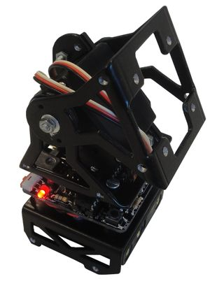
Unimod type A1 (click to enlarge)
Contenido
[ocultar]- 1 Introduction
- 2 Assembling
- 2.1 Step 0: Remove the paint from the inside of the Part B drills (Optional)
- 2.2 Step 1: Place the male/female spacers in the part D
- 2.3 Step 2: Screw the battery pack to the part D
- 2.4 Step 3: Screw the Skycube board to the part D
- 2.5 Step 4: Screw the MY1 module to the Skycube board
- 2.6 Step 5: Connect the servo and the power supply
- 2.7 Step 6: Install the batteries
- 3 Pictures
- 4 Links
- 5 News
Introduction
Unimod is the minimal module capable of oscillating autonomously. To assembly the following parts are needed:
- A MY1 module fully assembled (Assembly instructions)
- A Skycube board
- A flat battery pack for 4 AAA batteries ready to use (Instructions)
- The part D
- 4 male/female spacers. Size M3, length 12mm
- 4 spacers (female/female). size M3, length 10mm
- 8 M3 bolts. Length: 6mm
- 2 M3 flat head bolts. Length: 8mm.
- 2 M3 nuts
| 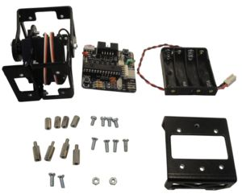 Beginning: Parts needed to assembly UNIMOD type A1 (Click to enlarge) |
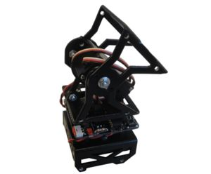 End: Unimod type A1 already assembled (Click to enlarge) |


Assembling
Step 0: Remove the paint from the inside of the Part B drills (Optional)
As was done when assembling the MY1 modules, optionally the paint in the part B drills can be removed. This way, the bolts are inserted smoothly in the drills.
| 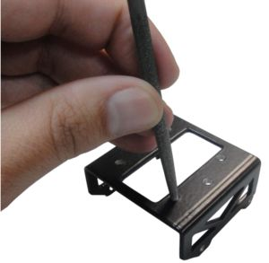 Removing the paint in the Part D drills (Click to enlarge) |
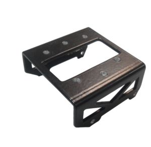 Part D without paint in the drills (Click to enlarge) |


Step 1: Place the male/female spacers in the part D
| 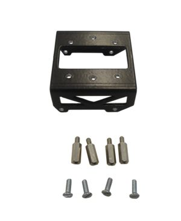 Part D next to the 4 male/female spacers and 4 bolts (Click to enlarge) |
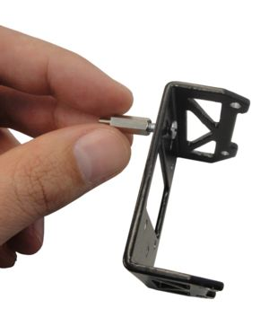 Placing one spacer (Click to enlarge) |
| 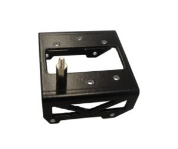 A spacer screwed to the part D (Click to enlarge) |
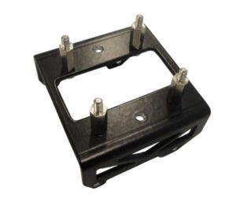 The 4 spacers placed (Click to enlarge) |


Step 2: Screw the battery pack to the part D
- Place the flat head bolts in the battery pack drills
| 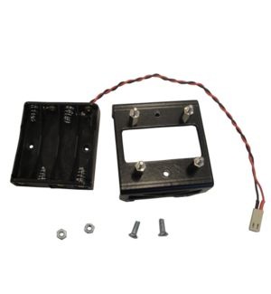 Battery pack, part D with the spacers, two flat head drills and two nuts (Click to enlarge) |
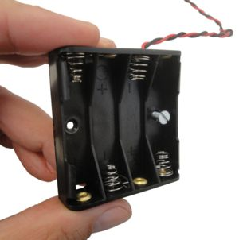 Inserting one bolt in the battery pack drill (Click to enlarge) |
| 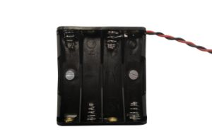 The two bolts placed in the battery pack (Click to enlarge) |
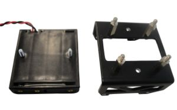 Battery pack bottom view, with the bolts inserted (Click to enlarge) |


- Place the battery pack under the part D and place the nuts
| |
| 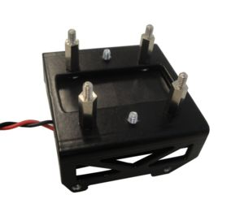 Place the battery pack in the bottom of the part D. Respect the same orientation shown in the picture!! (Click to enlarge) |
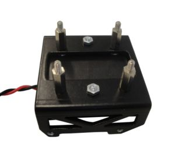 Battery pack screwed to part D (Click to enlarge) |


Step 3: Screw the Skycube board to the part D
| |
| 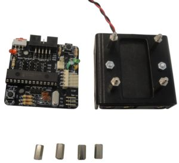 Skycube board, part D with the battery pack attached and 4 female/female spacers (Click to enlarge) |
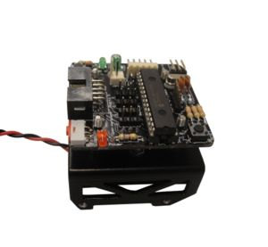 Skycube board on top of part D. The same orientation shown in the pictures must be used! (Click to enlarge) |
| 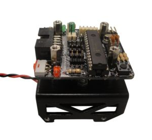 Skycube board on top of part D, with 4 female/female spacers placed (Click to enlarge) |


Step 4: Screw the MY1 module to the Skycube board
| |
| 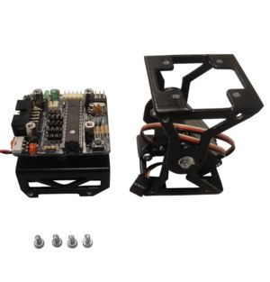 Skycube board screwed both to part D and to the battery pack, one MY1 module and 4 bolts (Click to enlarge) |
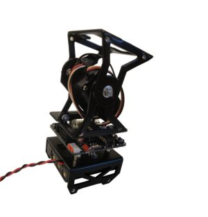 MY1 module on top of Skycube. Respect the same orientation shown in the picture! (Click to enlarge) |
| 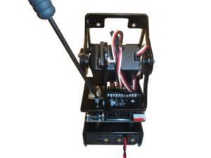 Screw the module to the Skycube board (Click to enlarge) |


Step 5: Connect the servo and the power supply
- Connect the servo to the Skycube board to any of the 3-pin header available (corresponding to servos number 2, 4, 6 or 8). The black wire should be pointing to the outside of the module.
| 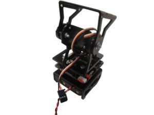 Unimod type A1, without the servo not yet connected (Click to enlarge) |
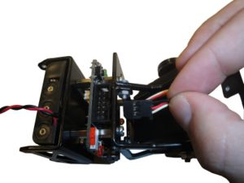 Connect the servo with the same orientation shown in the figure (Click to enlarge) |


- Connect the battery pack to the Skycube:
| 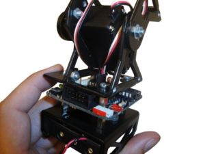 Unimod with the servo connected (Click to enlarge) |
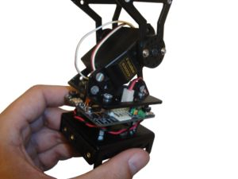 Unimod, with the power supply connected (Click to enlarge) |


Step 6: Install the batteries
- Finally, place the 4 AAA batteries in the battery pack. Turn on Unimod to test the power supply connection. The red led should be on.
| 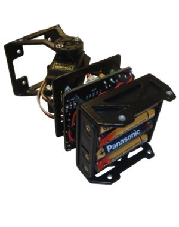 Unimod with the 4 AAA batteries installed (Click to enlarge) |
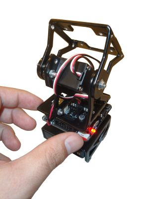 Unimod is on (Click to enlarge) |


Pictures
| Photo album |
Links
News
- 20/Feb/2011: This page is created!